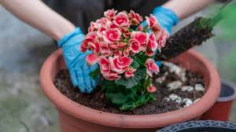
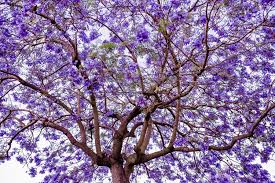

Con la llegada de la primavera, en las florerías, viveros y puestos callejeros, se puede encontrar una gran variedad de flores para plantar en los jardines o macetas. Las más pedidas son las prímulas, caléndulas, cinerarias, pensamientos, petunias y begonias, entre otras.